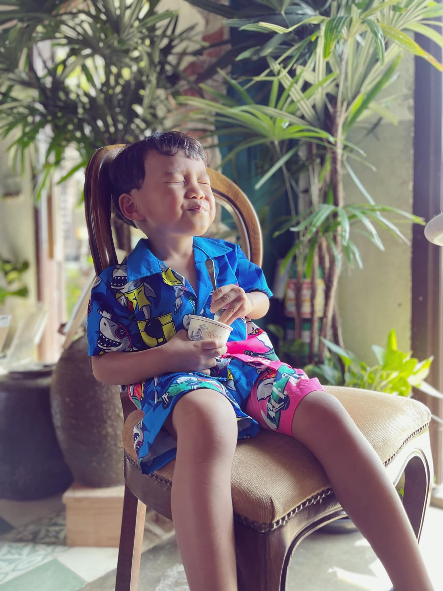

2023 · community · event
Baan Ar-Jor launches 'The Spirit of Sharing' ice cream for its foundation

Original text in Thai
ไอติมหย่อยยย น้องยิ้มหวานนนน 😆💕
วันนี้ตั่วโก๊ขอนำเหนอ ไอติมสุดฟินรสแรก #TheSpiritofSharing ไอติม 3 สี 3 ชั้น เสมือนเด็กๆ ที่จะถูกหล่อหลอมเป็นผู้ใหญ่ที่มีความสุข ในวันหน้า
วิธีทาน ตั้งช้อนตั้งฉากกับพื้นโลก กดตั้งแต่ชั้นบนสุด ทะลุถึงชั้นล่างสุด เพื่อให้ได้รสชาติพร้อมกัน 3 รส ฟินมากมาย 😋😋😋
แรงบัลดาลใจของไอติมรสนี้ ✨
มูลนิธิบ้านอาจ้อตั้งขึ้นเพื่อช่วยเหลือชุมชนบ้านไม้ขาว
อนาคตของชาติต้องใช้เด็กๆ ในวันนี้เป็นตัวขับเคลื่อน
การได้มาโรงเรียนในฝัน ครูใจดี มีเพื่อนเล่น กินอิ่มนอนหลับ เป็นปัจจัยเริ่มต้นของการ พัฒนาที่ยั่งยืนของเด็กเล็ก
ไอศกรีมก็เช่นเดียวกัน วัตถุดิบตั้งต้นดี คนปรุงเก่ง เราจะได้รสชาติที่ น่าสนใจ ชิคเนเจอร์ไอศกรีมถ้วยนี้ ทอรี่เลือกนมออร์แกนิคเป็นชั้นตั้งต้น เติมชอคโกแล็ตภูเก็ตจนเป็น มิลค์ชอคโกแล็ตในชั้นถัดมา ปิดท้ายด้วยดาร์คชอคแครกเกอร์ข้าวพองกรอบๆ จากนาผืนสุดท้าย ของไม้ขาว กลายเป็นไอศกรีม 3 สี 3 ชั้น เสมือนเด็กๆ ที่จะถูกหล่อหลอมเป็นผู้ใหญ่ที่มีความสุข ในวันหน้า
100% CONTRIBUTES TO BAAN AR-JOR FOUNDATION FOR CHILDREN IN-NEED
THE BAAN AR-JOR FOUNDATION STRIVES TO ASSIST THE MAIKHAO COMMUNITY, WITH A PARTICULAR FOCUS ON THE CHILDREN WHO WILL SHAPE THE FUTURE OF THE COUNTRY. WE FIRMLY BELIEVE THAT QUALITY EDUCATION, OUTSTANDING TEACHERS, AND A CONDUCIVE ENVIRONMENT ARE CRUCIAL COMPONENTS OF SUSTAINABLE PROGRESS.
SIMILARLY, EXCEPTIONAL ICE CREAM IS CRAFTED FROM THE FINEST DAIRY, ICE CREAM MAKERS, AND A TOUCH OF CREATIVITY. TORRY'S IS PRODUCING A CLASSIC FLAVOR WITH A UNIQUE TWIST. WE BEGIN WITH ORGANIC MILK, A PREMIUM FOUNDATION FOR ALL ICE CREAM FLA-VORS. WE THEN ADD 100% PHUKET COCOA IN THE FIRST LAYER TO CREATE A HARMONIOUS, VELVETY MILK CHOCOLATE. IN THE SECOND LAYER, WE INCORPORATE MORE COCOA UNTIL IT BECOMES AN OUTSTANDING DARK CHOCOLATE AND TOP IT OFF WITH CRISPY RICE CRACKERS FOR A PLAYFUL TOUCH. THIS ALSO SERVES AS A TRIBUTE TO THE LAST RICE FIELD IN THE MAIKHAO AREA. THE THREE-LAYERED ICE CREAM EXEMPLIFIES THE IDEAL ENVIRONMENT THAT CHILDREN REQUIRE FOR A BRIGHTER TOMORROW.
TORRY'S ICE CREAM IN COLLABORATION WITH BAAN AR-TOR FOUNDATION
#หรอยไงให้ได้บุญ 😇
#Torry 😋
#บ้านอาจ้อ 💕
#มูลนิธิบ้านอาจ้อ ❤️